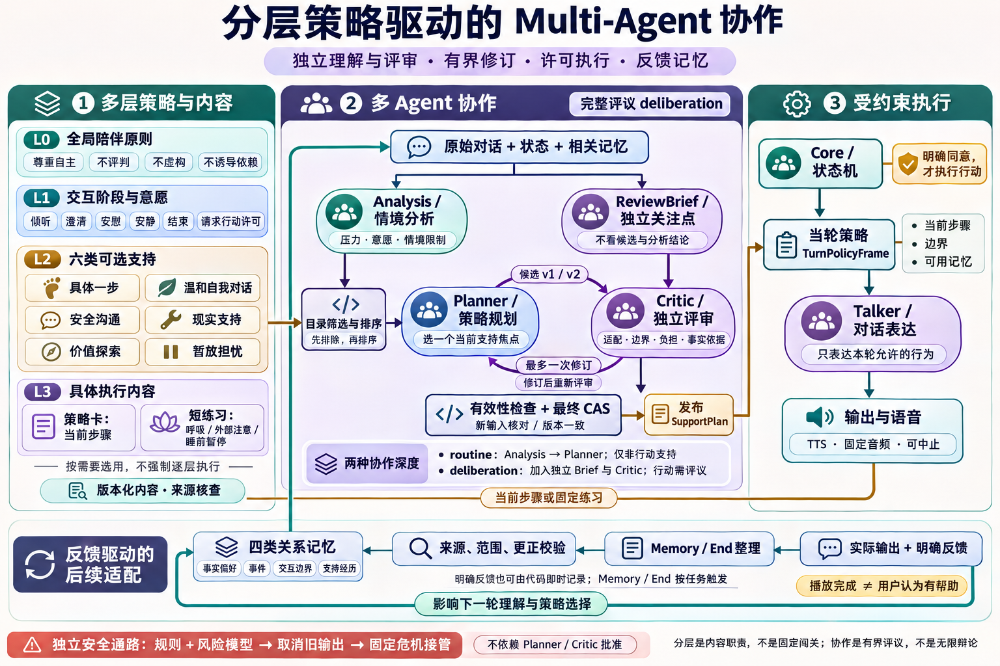

陪伴，
从听见开始。
有时想找一个办法。
有时，只想把今天说完。
我们为情感陪伴玩偶构建了一个后端：及时回应，认真判断，也给拒绝和沉默留出位置。
试着改变一次对话
面向高中生日常压力的课程研究原型。
演示仅使用合成案例或成年成员扮演。
“今天考得不太好。
先别给我建议，
听我说说就好。”
先回应意愿
暂不进入行动
记住这次边界
合成对话示意 · 安全检测始终独立运行
同一句烦恼，
可以有不同的下一步。
改变用户的意愿，看看回应与后台判断怎样一起变化。这里使用预设合成内容，不调用在线模型。
你听见的
合成对话用户
今天考得不太好。我只想说说，先别给建议。
好，先听你说。
如果你是对话中的用户：
系统考虑的
routine / 非行动支持-
理解当下需要
明确想被听见，不追问解决办法。
-
尊重行动边界
目录过滤排除行动支持，保留倾听。
-
按范围记住
记录当前边界，不推断永久偏好。
可以先看结果，也可以逐步演示。
这些判断由哪些模块承担？演示按顺序解释职责。实际实时 Talker 与后台协作并行；风险通路可独立接管。
从生活里的压力，
找到支持的入口。
五类压力与四条共同路径帮助理解情境。它们可以重叠，也不是诊断标签。怕被评价、担心隐私、不确定谁安全，同样影响一个人是否愿意开口。
压力来自哪里
学业负担 社会评价
关系冲突 未来迷茫
自我压力
此刻怎样困扰我
反复想 自我批评
睡眠变差 孤独
证据如何进入设计
核查来源 → 提取机制 →
编写步骤与排除条件 → 真实模型链路验证。
16 项来源记录研究对象与阅读范围；短语音改编不继承完整干预的效果。查看研究来源
六种支持，
选择权一直在你。
先核对适用条件，再选择一个焦点。这里筛选内容映射；实际运行还会检查安全情境、意愿、历史拒绝与明确许可。
正在读取版本化策略目录…
也可直接阅读六类策略配置。
三段可以随时停下的短练习自然呼吸 / 外部定位 / 睡前暂停
固定音频与停顿实测均不超过90秒。自然呼吸不屏气、不强制节奏；不适即停。播放完成与用户觉得有帮助，分别记录。
温和的回应背后，
职责必须清楚。
Python 模块化单体中，实时交互、后台协作、独立安全和长期记忆各负其责。模型提出判断，Core 决定什么能在此刻执行。
输入 / ASR → Core → Talker → 语音输出
冻结当轮策略，按 generation 取消旧输出。Analysis → Planner ↔ Critic
完整评议加入独立 Brief，最多修订一次并复核。风险检测 → 输出闸门 → 固定接管
迟到的 high 仍可接管，不等后台协作完成。来源校验 → 范围 / 更正 → 相关检索
策略、记忆和结束总结分别判断有效性。分层策略与多 Agent 机制总图展开查看 L0–L3 / 协作 / 反馈

继续往模块里看
交互图支持节点检查、关系追踪、主题与缩放；源码链接固定到对应实现提交。
记住这一次，
不替你定义每一次。
“这个办法没帮助”可以改变下一步。可归因的反馈保留来源、策略版本、步骤和有效范围。
“刚才这个办法没帮助，
我现在只想有人听。”合成反馈示例
记录什么，也决定怎么回应。
- 本次事实
- 对刚执行的具体支持，明确反馈“无帮助”。
- 当前行为
- 停止行动；本会话不重复同一方法，尊重“只听”的边界。
- 下次相遇
- 检查范围与时效。一次反馈不变成永久偏好；用户更正会关联替代旧记录。
把体验做出来，
也把等待测出来。
2026年11月4日记录：152 项离线检查通过，完成17段固定多轮场景与补测。最终30次普通动态语音成功，失败与质量限制保留在报告中。
一句回应，时间花在哪里？
从服务端收到文本，到本机客户端收到首个音频包。条带按累计分位数作差示意，不代表一条样本的分段耗时。
30次顺序尝试 · 动态 TTS 无缓存 · 普通后台开启
不包含用户说话、ASR等待或扬声器首响。
- 文本成句
- 1.26 s
- 至 TTS 完成
- 3.54 s
- 至客户端首包
- 3.61 s
整段 WAV 合成是当前首包等待的主要来源之一。
已完成工程检查
并发与取消、来源校验、迁移与幂等、独立 wheel 安装、观察台，以及本机 WebSocket / Opus / ASR 联调。
如实保留的差距
900 ms 文本首句、常规后台8秒尚未稳定达到。真机首响1.8秒参考目标未测；偶发角色超时、重复安慰等表达仍需精修。
# 离线演示
./scripts/run.ps1 fake
# 真实模型
./scripts/run.ps1 live
# 本地观察台
./scripts/run.ps1 dashboard每一步设计，
都有来处。
保留研究对象、阅读范围与外推限制。课程原型的工程运行证据，与心理支持效果证据分开呈现。
展开16项来源与实际阅读范围
来源目录正在加载；完整核查可通过上方链接阅读。